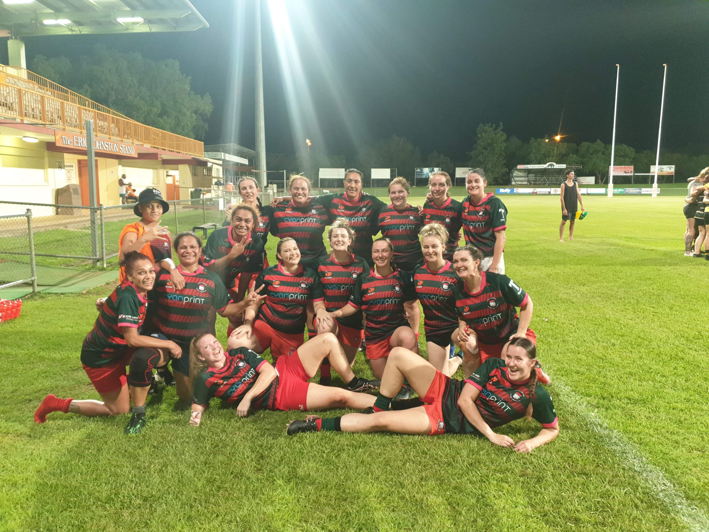
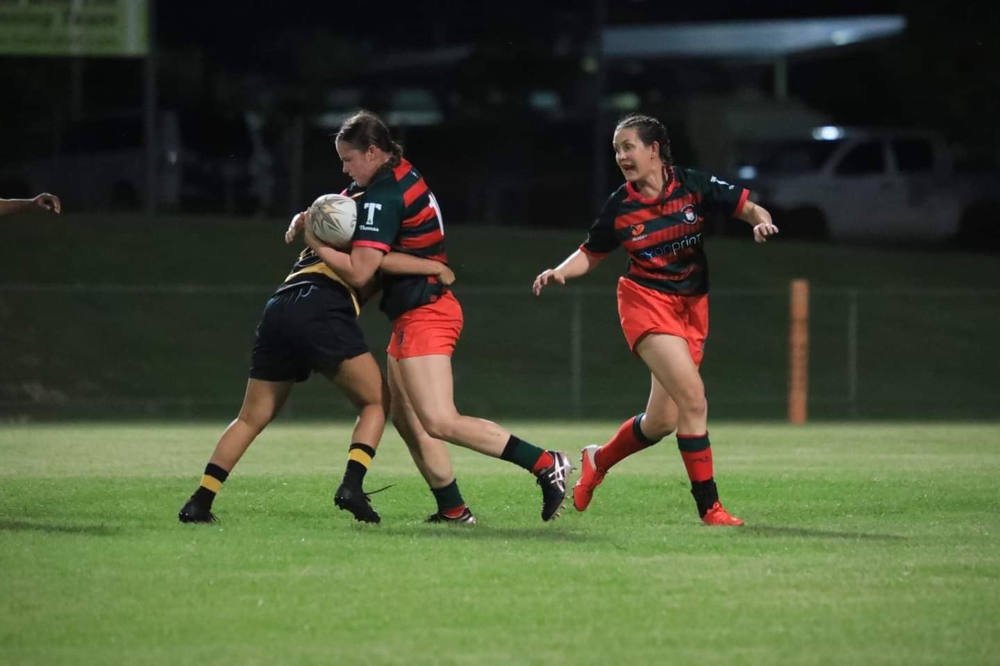
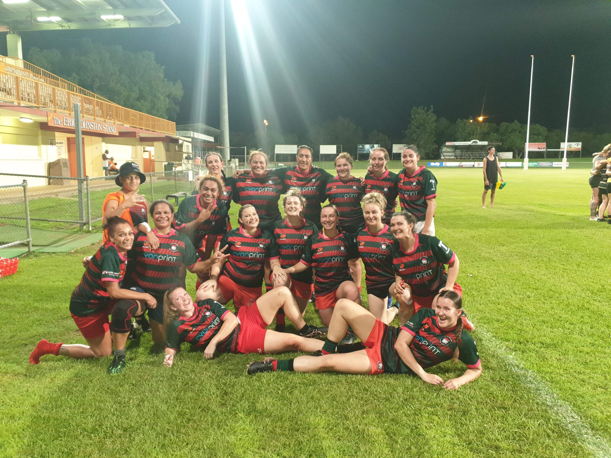
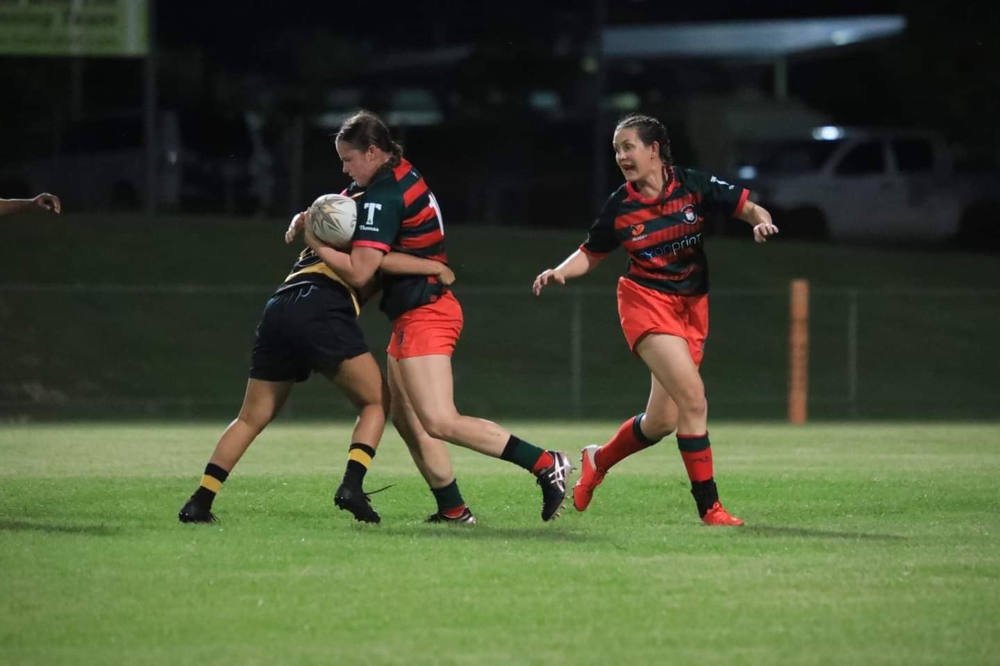

Name: Ellen Cohen
Student Number: s3905756
Student Email Address: s3905756@student.rmit.edu.au
GitHub Public Repository URL: classgist
GitHub Pages URL: classgist
Picture:
Background Information
Fun Facts...About Me!
 

My interest in IT started when I began work as a communications manager and planner. A large component of my work involves IT planning, management and service delivery to customers. As I continue this job, the interest in IT has developed from a purely professional interest into a personal interest due to broad IT is. Specifically, I endeavour to learn more about Cloud Computing, mobile wireless technologies and AI.
Currently, I live and work in Darwin but the nature of my work requires me to move every 1 – 3 years. Due to this, being able to conduct remote learning was essential and, after extensive research into many online universities, decided on RMIT. This decision was solidified by friends of mine who had studied at RMIT previously, and had a great experience, as well as by good online reviews of the RMIT Bachelor of IT curriculum.
Throughout my studies I expect to gain a broad understanding of IT generally as well as how it has been previously used, is currently being used and is looking likely to be used by society. I am not expecting a very technical course but expect to cover topics such a cloud computing, AI, wireless technologies etc as they are increasingly prevalent. Hopefully, this course will be the lead into further technical study and development of understanding on these topics.
A cybersecurity analyst plans and carries out security measures to protect a company’s or organisation’s computer networks and systems. They keep track on cybersecurity threats and monitor the networks for any breaches in security and can play a role in creating, maintaining and control security measures. This role is appealing as cybersecurity is an essential consideration for all modern companies and organisations to operate in the 21st century.
The integration of cyber security specialists within every workforce will be paramount to ensure companies and organisations maintain secure networks to protect their own operations as well as their customers and users.
A cyber security analyst requires a mix of hard and soft skills but specifically the following skills, knowledge and experience are recommended or required:
At current, I do not have any of these skills, qualifications or knowledge and this Bachelor of Information Technology is the first step. Once the Bachelor of Information Technology is complete, I will look to undertake further study with a Masters degree. This may be a Masters in Cybersecurity, Business Administration or Data Analytics. Whilst undertaking these studies, I will look to undertake small courses and self-paced learning to build these skills and knowledge. This will be pursued through programs such as Code Academy, which help to teach languages such as HTML, Java, Python etc., or Udemy to develop this knowledge.


The results of the 16 Personalities test, VRAK test and Big Five personality test reinforce to me that I am willing to place myself into leadership positions, commit the time and effort to a task, communicate with others and confidently back my finalised decision.
These results will influence my behaviour to be more conscious of the identified weaknesses and to acknowledge there will be others who excel in the areas I am weak in. They have also influenced me to be more aware of my strengths and opportunities to implement them for benefit of a team.
Identification of these weaknesses will allow me to be open and honest with other team members about where I can excel and where there may be friction points. They can also be considered in the selection of team members for group projects or team work to avoid personality clashes and help create a good team where everyone compliments each other’s strength and weaknesses.
Overview.The Rugby Union Trainer is an application, supported on iOS and Android, for mobile phone, tablet and desktop.
The Rugby Union Trainer will enable players to train in different environments and areas as part of their extras, off season or pre-season training.
These environments and areas can include, but are not limited to, individual, small team (3-5 people) and mid-sized team (5-10 people) environments as
well as areas such as marked fields, unmarked fields, gyms and home.
This is to enable players to start, or continue training, regardless of their environment, area access and phase of season so that they can maintain and
develop their basic skills, gameplay knowledge and fitness.
Motivation.Rugby Union is a popular global sport. In 2019, World Rugby reported that there were 9.6 million players globally and 534 million
online video views of World Rugby tournaments. With Rugby Union participation on the rise, Rugby Union Trainer is an application to accommodate people
of all experience levels, number of players, environments, areas and phase of season.
Commencing a sport as an adolescent, young adult or later in life can be nerve wracking if you do not already know someone involved in a club or have
never been involved previously. Rugby Union Trainer seeks to encourage beginner and intermediate level players to start playing and develop their skills
by providing an application that reduces barriers and provides a mean to inform and support players. This is due to elite level players being enabled with
constant access to specialist staff, training programs and support.
Description.Rugby Union Trainer will be an iOS and Android supported application. On initial engagement with the application, a user profile
would be created and a questionnaire will be filled out by the user to tailor specific content to be presented to them.
This questionnaire will cover topics such as basic personal details, medical considerations (especially previous injuries), previous experience (if any),
previous involvement with Rugby Union clubs (if any) and goals.
Once the questionnaire is completed, the user will be presented content through different informative means. These means will include, but are not
limited to:
Through these means, the content presented can include, but would not be limited to:
This content will initially be shaped by the questionnaire, so the user has relevant information being presented to them. The user will then be able to access all content based on their interests and requirements through the menu. The menu bar will include:
Rugby Union Trainer will be a pool of resources that sees a collaborative effort from third parties such as players, coaches, support staff at the local, national and international level. The application will remain controlled so any third party wishing to post will need to obtain approval to post unless they have a verified and trusted collaborator permission. This control, in addition to regular monitoring of content will assist in ensuring the application remains appropriate and relevant.
A collaborative application would require significant effort initially to have specialist staff contribute to the content of the application but would be incredibly beneficial not only to beginner and intermediate players but communities as well.
Tools and Technology.. Rugby Union Trainer will be a closed source software application. This will assist with the control function required to manage content. To increase exposure to the intended audience, Rugby Union Trainer will need to be available on iOS, Android and desktop. According to GlobalStats, in February 2021, 40.4% of the global population used Android, 32.3% Windows, 16.5% iOS, 7.1% OS X and the remainder across other platforms.
To support the application on iOS, Objective-C would be used to program the application whilst Xcode5, Mac OS X and iOS 7 SDK would be used to develop the application as other operating systems are not supported.
To support Rugby Union Trainer on Android, Java would be used to program the application with Android Studio, Android SDK, Android Developer Tools and Android system images for the Android emulator being used to develop it.
Skills required.Rugby Union Trainer will not require any specific hardware as it will be an application available on mobile phones, tablets and desktops. Due to current personal skills the following would be required:
These people and software identified to support Rugby Union Trainer would be feasible to source but financial sustainment would be a topic to delve further into.
Outcome.Rugby Union Trainer will allow beginner and intermediate players to increase their involvement in sport and enable elite level and experienced players, coaches, referees and support staff grow Rugby Union by reducing barriers. The barriers of fear of the unknown, nervousness and apprehension to play contact sport will be reduced through education and resources available to the public. The development of Ruby Union Trainer will allow the professional and athletic develop of all players whilst promoting sport.